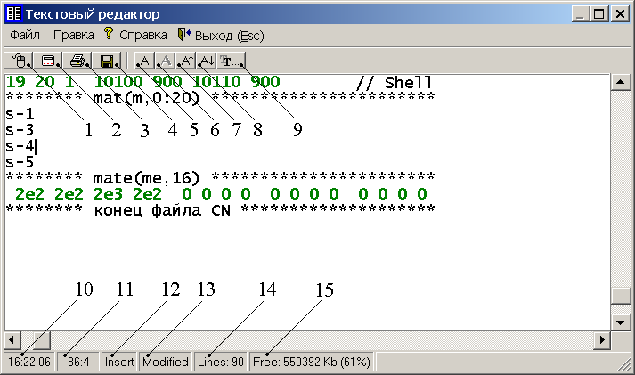
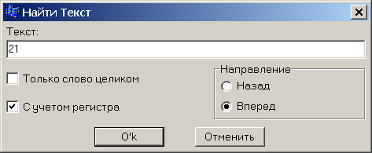
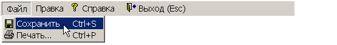
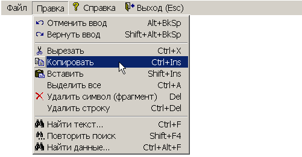
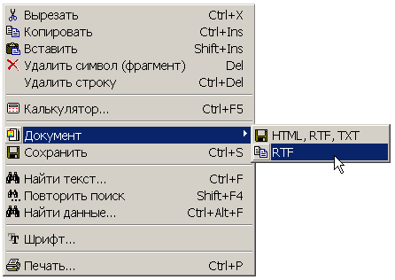
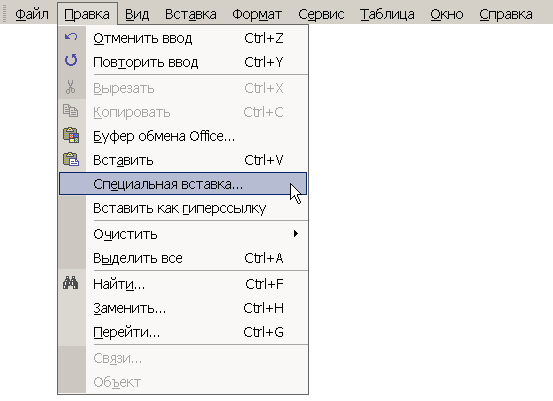
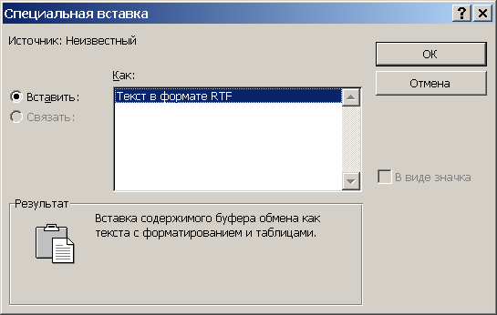

3. Изменение положения и размеров окна
РЕДАКТОРА
ТЕКСТОВЫЙ РЕДАКТОР (далее - РЕДАКТОР) обеспечивает:
На рис. 1 показан внешний вид РЕДАКТОРА.

Рис. 1
Числами на рис. 1 обозначены:
РЕДАКТОР автоматически запоминает все изменения типа шрифта, его размера, межстрочного интервала и т.п. и при повторном старте учитывает эти изменения.
Изменение размеров и положения окна РЕДАКТОРА иногда полезно для одновременного просмотра графического изображения и текстовой информации.
Изменение размера окна выполняется с помощью общепринятого в операционных системах Windows приема:
Изменения положения окна РЕДАКТОРА на экране дисплея также выполняется с помощью общепринятого в операционных системах Windows приема:
Новые размеры и положение окна РЕДАКТОР автоматически запоминает и при повторном вызове располагается в соответствии с ними.
Большинство из этих команд соответствуют соответствующим стандартным командам управления текстового процессора Microsoft Word.
В зависимости от режима работы РЕДАКТОРА, отдельные команды управления могут быть недоступны.
Перечислим основные команды управления.
Сохранение
текста в файлах TXT, RTF, HTM
Копирование
в буфер обмена в формате RTF
Внимание: блоковые команды недоступны в режиме просмотра файла (за исключением таких, которые не приводят к модификации файла)!
Выделение фрагмента текста (блока) производится следующим образом.
Разместить курсор в начале выделяемого фрагмента, нажать клавишу <Shift> и, удерживая ее в нажатом состоянии, с помощью команд управления курсором и листания страниц переместить курсор в конец фрагмента (выделенный фрагмент окрасится в синий цвет).
Выделить блок можно и другим образом.
Переместить курсор мыши на начало выделяемого блока и нажать на ее левую кнопку. Затем, не отпуская кнопку мыши, переместить курсор мыши (возможно комбинирование перемещения курсора мыши с прокручиванием колеса мыши) в позицию конца блока и отпустить кнопку мыши.
Комбинация клавиш <Ctrl+Ins> копирует выделенный блок во временную память - буфер обмена.
Удаление выделенного блока производится с помощью клавиши <Del>.
Копирование выделенного блока из буфера обмена производится следующим образом.
Информация в буфере обмена сохраняется до помещения в него командой <Ctrl+Ins> новой информации. Таким образом, с помощью комбинации команд <Ctrl+Ins> и <Shift+Ins> возможен обмен между различными окнами редактирования.
Перемещение блока можно осуществить следующим образом:
Выделение всего текста осуществляется с помощью команды <Ctrl+A>.
Внимание: команды редактирования недоступны в режиме просмотра файла (за исключением команд, не приводящих к модификации файла, например, команд навигации по файлу и т.п.)!
Из команд редактора следует выделить команду, выполняемую нажатием комбинации клавиш <Ctrl+S> (сохранить редактируемый файл).
Во избежание неприятностей время
от времени полезно сохранять редактируемый файл.
Команда <Del> удаляет либо символ, на который указывает курсор редактора (если не было выделения блока), либо блок (если ранее были выполнены команды выделения блока).
Команда <Ctrl+Del> удаляет текущую строку редактируемого файла.
Команда <Ctrl+P> предназначена для вывода текста на печать (используется стандартный диалог вывода на печать). Возможен вывод на печать как всего документа, так и фрагмента (выделенного блока). Для вывода на печать фрагмента текста необходимо выделить его до выполнения команды <Ctrl+P>. Затем в стандартном диалоге вывода на печать необходимо установить соответствующий переключатель “Выделенный фрагмент”.
С помощью комбинации клавиш <Alt+BackSpace> можно отменить последние операции редактирования. Комбинация клавиш <Shift+Alt+BackSpace> возвращает отмененные операции редактирования.
Команда <Ins> - переключатель режимов ввода символов “Вставка” (“Замена”).
Команда <Ctrl+F> вызывает диалоговое окно поиска фрагмента текста (рис. 2).

Рис. 2
Назначение органов управления этого диалогового окна и приемы работы с ними общепринятые.
Для продолжения поиска фрагмента текста предназначена команда <Shift+F4> (работает после команды <Ctrl+F>).
При поиске фрагмента текста предполагается, что этот фрагмент полностью помещается в строке редактируемого текста (без переносов на другую строку).
Некоторые команды дублируется в Меню РЕДАКТОРА (рис. 3-4).

Рис. 3

Рис. 4
Нажатие на правую кнопку компьютерной мыши (эквивалентно нажатию на кнопку Меню РЕДАКТОРА в поз. 1 на рис. 1) приводит к появлению всплывающего меню (рис. 5).

Рис. 5
Сохранение
текста в файлах TXT, RTF, HTM
Сохранение загруженного в РЕДАКТОР текста в трех файлах с форматами TXT, RTF, HTM (сохранение в форматах RTF и HTM особенно удобно, если сохраняемая информация содержит таблицы с результатами расчета и предназначена для дальнейшего использования совместно со специализированными текстовыми процессорами – такими, как, например, Microsoft Word. Эта функция ДОКУМЕНТАТОРА реализуется с помощью всплывающего меню (рис. 5).
Копирование
в буфер обмена в формате RTF
Формат RTF является стандартным для офисных приложений, работающих в среде Windows (в частности, для текстового процессора Microsoft Word). Этот формат позволяет корректно переносить содержимое файлов в различные приложения, имеющие мощные средства дальнейшего редактирования и вывода на печать. Особенно полезен этот формат для переноса файлов, содержащих исходные данные или результаты расчета в табличном представлении. Эта функция ДОКУМЕНТАТОРА реализуется с помощью всплывающего меню (рис. 5). Отметим, что в этом случае осуществляется копирование всего текста файла в буфер обмена операционной системы (независимо от того, был выделен фрагмент файла или нет). После этого необходимо запустить соответствующее приложение (допустим, Microsoft Word). Затем в меню выбрать позицию “Специальная вставка…” (рис. 6).

Рис. 6
Затем из предложенного списка необходимо выбрать “Текст в формате RTF” (рис. 7).

Рис. 7